a := matrix([[4, 3, 5, -15], [1, -1, 2, -7], [2, 1, 3, -9]])
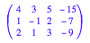
linalg::gaussJordan(a)
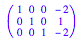
a := matrix([[4,3,5,6],[1,-1,2,11],[2,1,3,6]])
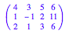
linalg::gaussJordan(a)
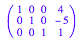
a := matrix([[4,3,5,9],[1,-1,2,8],[2,1,3,7]])
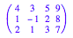
linalg::gaussJordan(a)
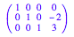
a := matrix([[2,3,-1,2],[1,-1,0,3],[0,5,2,-7],[3,2,1,3]])
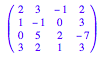
linalg::gaussJordan(a)
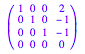
linalg::gaussJordan(matrix([[2,3,-1,0],[1,-1,0,0],[0,5,2,0],[3,2,1,0]]))

linalg::gaussJordan(matrix([[2,3,-1,1],[1,-1,0,1],[0,5,2,1],[3,2,1,1]]))
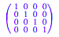
linalg::gaussJordan(matrix([[2,3,-1,-4],[1,-1,0,6],[0,5,2,-13],[3,2,1,4]]))
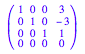
a:=matrix([[2,0,4,2,x],[-1,1,-1,-2,y],[1,3,5,-2,z]])
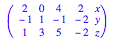
linalg::gaussJordan(a)
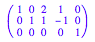
x